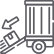

Як працює послуга хендлінгу
1
Прийом вантажу в аеропорту
- Після прибуття рейсу вантаж розвантажують з борту літака за допомогою спеціалізованої техніки (конвеєри, навантажувачі, крани).
- Вантаж проходить первинний візуальний огляд для перевірки його цілісності.
- Важливо дотримуватись правил безпечного транспортування та обробки, особливо для тендітних, небезпечних чи температурно-чутливих вантажів.
2
Переміщення та тимчасове зберігання в терміналі аеропорту
- Вантаж транспортується у спеціальні зони аеропорту для подальшої обробки.
- Якщо товар має обмеження або потребує спеціальних умов (наприклад, холодильне зберігання), його розміщують у відповідних складах.
- Проводиться сортування вантажу відповідно до пунктів подальшого призначення та митного статусу.
3
Митне оформлення та перевірка документів
- Митні служби перевіряють супровідні документи на відповідність митним нормам країни-імпортера.
- Проводиться сканування або фізичний огляд вантажу для перевірки його вмісту. • Якщо потрібні додаткові дозволи (наприклад, санітарний або фітосанітарний контроль), вантаж проходить відповідні перевірки.
- Після сплати митних зборів і отримання дозволів товар може бути випущений у вільний обіг.
4

Видача вантажу отримувачу та транспортування до кінцевого пункту
- Після митного очищення вантаж може бути перерозподілений залежно від кінцевого місця призначення.
- Вантаж перевіряють на наявність пошкоджень, маркують (якщо потрібно) і готують до подальшої доставки.
- Вантаж може бути переданий на тимчасове зберігання, якщо отримувач не готовий забрати його одразу.
5
для подальшого транспортування. Оформлення транзитних документів
- Після митного очищення вантаж може бути перерозподілений залежно від кінцевого місця призначення.
- Вантаж перевіряють на наявність пошкоджень, маркують (якщо потрібно) і готують до подальшої доставки.
- Вантаж може бути переданий на тимчасове зберігання, якщо отримувач не готовий забрати його одразу.